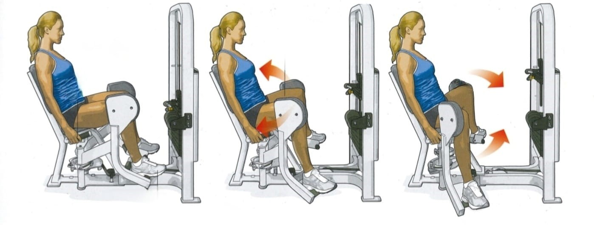
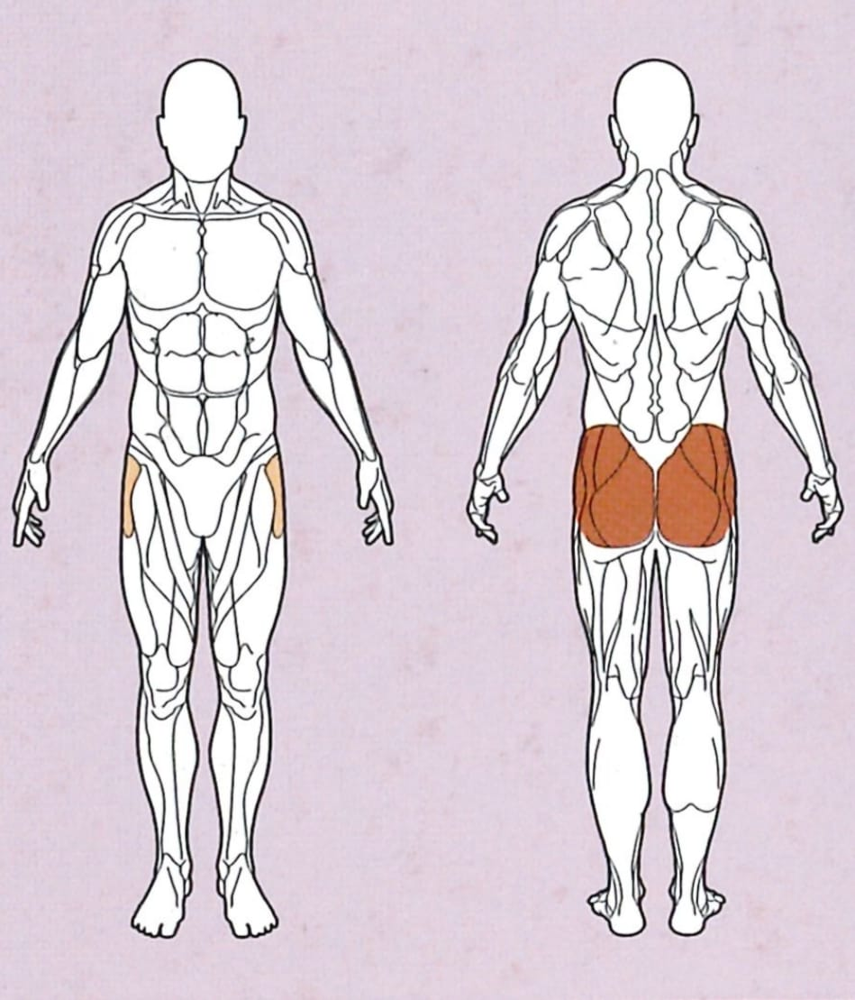
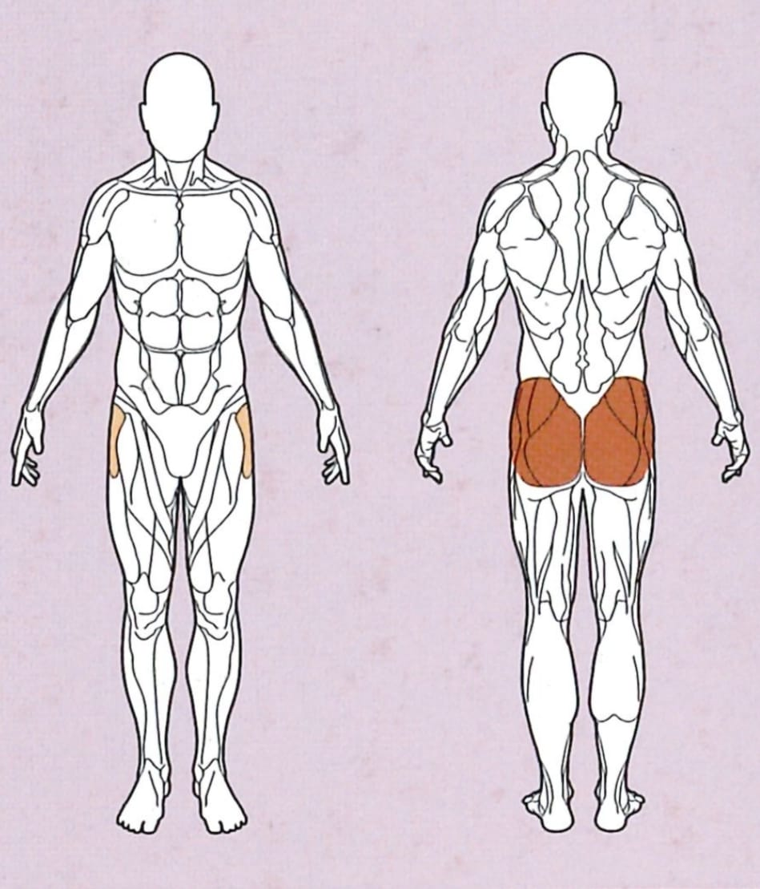

Abduktor



Ausgangsposition
● Sitzhöhe so einstellen, dass die Knie bequem an den seitlichen Polstern anliegen
● Die Sitzpolster so verstellen, dass sie die Knie nicht zusammendrücken, nur berühren
Ausführung
Drücke dich mithilfe der seitlichen Griffe in den Sitz, und drücke die Polster gleichmäßig auseinander.
Rückführung
Kehre nun in die Ausgangsposition zurück, achte dich darauf, dass die von der Maschine einwirkende Kraft gleichmäßig auf beide Beine verteilt ist.